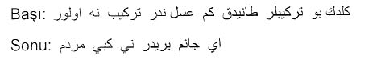
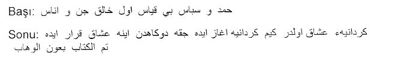
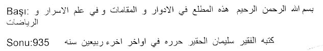
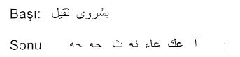
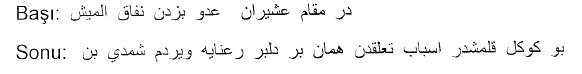
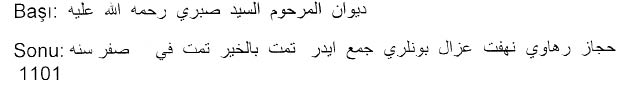
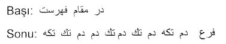
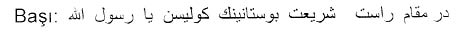

Fransız Millî Kütüphanesi’nin “Şark Yazmaları” bölümünde iki bini aşkın Türkçe elyazması bulunuyor1. Kısmen Türkçe kısmen de Arapça ve/veya Farsça olan ve bu durumda ya Arapça ya da Farsça metinlerle birlikte kataloglanmış olan yazmalar bu rakama dahil değildir2. Bu iki bin yazmanın yanı sıra, doğrudan doğruya Türk musıkisini konu almakla birlikte, Fransızca kaleme alınmış olduklarından dolayı Kütüphanenin Şark Yazmaları bölümünde değil de başka bir bölümünde bulunan az sayıda yazma da mevcuttur.
İlk Türkçe yazmanın Fransız Millî Kütüphanesi’ne (eski adıyla: Fransız Kraliyet Kütüphanesi) girişi 1640 tarihini taşıyor3. Bu kütüphanenin ilk yazmalar kataloğu ise 1739 yılında basılmıştır4. Bu katalogdaki Türkçe yazma eserlerin tasnifi Şark dilleri uzmanı Pierre Armain (ölümü 1757) tarafından yapılmıştı. 1712’de İstanbul’da Fransız sefareti dil okulundan mezun olduktan sonra Kahire ve İskenderiye’deki Fransız konsolosluklarında tercümanlık görevinde bulunan Armain, 1734’te Kraliyet Kütüphanesi tercümanlığına atanmış; Türkçe, Arapça ve Farsça yazma eserler toplayıp Paris’e getirmek için 1740’lı yıllarda tekrar bizzat İstanbul’a yollanmıştı5.
Şarkiyatçılığın doğuşuna tanık olan onyedi ve onsekizinci yüzyıllar boyunca Fransa bu alanda tutarlı bir kültür politikası izledi, Osmanlı topraklarına din adamları, bilginler ve araştırmacılar yollayıp Şarkın değerli yazma eserlerini Kraliyet Kütüphanesi’ne kazandırmayı amaçladı. Fransız Maliye Bakanı Jean Baptiste Colbert’in (1619-1685) bu amaçla birçok görevliyi Osmanlı topraklarına yolladığı biliniyor. Bu şarkiyatçıların en tanınmışlarından biri olan Antoine Galland (1646-1715) birçok Arapça, Türkçe ve Farsça kitapla birlikte Ali Ufkî’nin (1610?-675?) ardında bıraktığı tüm yazmaları beraberinde Paris’e getirmişti6. Ondokuzuncu yüzyıl başlarından sonra ise Fransız Millî Kütüphanesi Türkçe yazmalar koleksiyonunu sadece bağışlar ve satın almalar yoluyla genişletti. Bağışların en önemlilerinden biri Fransız Türkolog Jean Deny’nin terekesinden 1966’da intikal eden kitaplarıdır. Bunların arasında çok sayıda musıki yazması da vardı.
Armain’in 1739 tarihini taşıyan ilk Fransız Kraliyet Kütüphanesi Yazma Eserler kataloğu sadece Türkçe yazmaları kapsamıyordu. Üç bin kadar Farsça, Arapça, Ermenice, İbranice vs. yazma eseri kapsayan katalogda 396 adet Türkçe elyazması eser yer alıyor. Bu esas tasnifteki 396 yazma eser [Turc 1], [Turc 2] vs. kodlarıyla tasnif edildiler. 1739 yılından sonra Fransız Kraliyet Kütüphanesine giren Türkçe yazmalar ise bu ilk basılı yazmalar kataloğuna birer ilâve olarak kabul edildiler ve bir sonraki tasnifte [Suppl. Turc 1], [Suppl. Turc 2], vs. kod numaralarını aldılar. Dolayısıyla, Armain’in bir notunu içeren tüm yazma eserler 1739 öncesi girişlidirler.
Kütüphanede mevcut tüm Türkçe elyazması eserlere özgü tek katalog çalışması ise 1932 ve 1933’te yayınlandı7. Edgar Blochet’nin bu iki ciltlik kataloğunda 396’sı eski Armain kataloğuna ait olmak üzere toplam olarak 1.814 adet yazma eser tanımlanıp tasnif ediliyor. Blochet’nin kataloğunun yayınından sonra kütüphaneye girmiş olan 183 adet Türkçe elyazması eser ise henüz tam olarak kataloglanmamıştır ve daktilo edilmiş kabataslak bir liste halinde bulunmaktadır8.
Fransız Millî Kütüphanesinde Türk musıkisine ilişkin toplam olarak 19 adet elyazması eser bulunuyor. Bunların dokuz tanesi güfte, ilâhi ya da âyin mecmuası, beş tanesi edvâr kitabı (müzik teorisi kitabı), diğer beşi ise ya karma ya da çok farklı nitelikte yazmalardır. Bu yazmaların bazıları geleneksel Osmanlı/Türk musıkisi tarihi açısından özellikle önemlidir, çünkü bilebildiğimiz kadarıyla, dünyada tek nüsha olarak burada, Fransız Millî Kütüphanesinde bulunuyorlar.
Bunlar arasında Ali Ufkî’nin çoğu ölümünden az sonra Fransız şarkiyatçı Antoine Galland tarafından Paris’e getirilmiş olan evrâk-ı metrukesi arasında bulunan ve yanlış bir şekilde “Mecmua-yı Saz u Söz’ün müsveddeleri” olarak bilinen [Turc 292] katalog numaralı yazmayla, [Suppl. Turc 472] numaralı “Mezâmir” yazması var. Kütüphanedeki bir diğer önemli yazma da [Suppl. Turc 1424] katalog numaralı Şaban 873 Hicrî (Mart 1469) tarihini taşıyan ve ilk Türkçe müzik kuramı kitaplarından biri olan Kırşehirli Yusuf bin Nizameddin’in Edvâr’ının Türkçe çevirisinin orijinal nüshasıdır. Bu kitabın bilinen diğer tek nüshası Ankara’da Millî Kütüphane’dedir. Onsekizinci yüzyıl İstanbul’unda müzik ve müzik yaşamı hakkında temel bilgi kaynaklarımızdan biri Charles Fonton’un 1751 tarihini taşıyan “Essai sur la Musique Orientale” (Şark Musıkisi Hakkında Deneme) adlı eseridir. Bu eserin elyazması tek nüshası da kütüphanenin Fransız Elyazmaları bölümünde [N.A. 4023] kod numarasıyla tasnif edilmiş bulunuyor.
Onbeşinci yüzyıla ait diğer iki önemli Türkçe müzik kuramı kitabının ise ([Turc 150] katalog numaralı Hızır bin Abdullah edvârı ve [Turc 243] katalog numaralı Seydî edvârı) dünyada sadece dört ya da beş nüshası biliniyor. [Suppl. Turc 1495] katalog numaralı ve onsekizinci yüzyıla ait Hızır Ağa edvârının bilinen diğer iki nüshası ise Topkapı Sarayı Kütüphanesi’yle İstanbul Büyükşehir Belediyesi Atatürk Kitaplığı’nda bulunmaktadır. Dolayısıyla, toplam sayıları az da olsa, Türkçe kaleme alınmış müzik teorisi kitapları açısından Fransız Milli Kütüphanesi zengin sayılır.
“Mecmua” ya da “Mecmua-yı fevaid” niteliğindeki diğer bazı karma yazmalarda ise müzik konusu yazmanın sadece küçük bir bölümünü kapsıyor. Genellikle de müzikle ilgili bu bölüm bütünselliği olan bir kitap niteliği taşımıyor. Zaten bu tür mecmualar tutarlı bir kitap oluşturmak ve çoğaltılıp okunmak için değil, yazarın kişisel notlarından oluşuyor ve genellikle sadece yazarın kendi kullanımı için kaleme alınıyorlardı. Blochet kataloğunda, sadece bazı bölümleri müzikle ilgili olan [Turc 5], [Turc 116] ve [Suppl. Turc 384] numaralı yazmalar böyledir.
Bu küçük envanterimizde Türkçe musıki yazmalarının eleştirel, ayrıntılı ve karşılaştırmalı bir incelemesine girişmedik. Sadece bu yazma eserlerin belli başlı niteliklerini vurgulayarak müzikolog ve müzik tarihçilerine ışık tutmayı amaçladık. Bazen yazmada özellikle ilginç bulduğumuz birtakım metinleri yazmanın tanıtımına aynen dahil ettik. Bazı yazmalar hakkında da herhangi bir metin karşılaştırmasına girişmeden, sadece başka kütüphanelerde bulunan nüshalarını belirtmekle yetindik. [Suppl. Turc 472] veya [N.A. 4023] gibi bir édition critique’e konu olmuş, yayınlanmış ve/veya başka dillere çevrilmiş yazmalarda ise bunları çok kısaca tanımlayıp matbu versiyonlarına ve (varsa) çevirilerine işaret etmekle yetindik.
Bugüne dek kimse tarafından ayrıntılı bir şekilde incelenmemiş olan ve bizce büyük önem taşıyan Ali Ufkî’nin evrak-ı metrûkesinin bir bölümünün derlendiği [Turc 292] katalog numaralı mecmuaya ise diğer yazmalardan daha uzunca bir yer ayırdık. Bu mecmuanın Ali Ufkî’nin British Library’de bulunan [Sloane 3114] katalog numaralı Mecmua-yı Saz u Söz ile ortak yanları vardır. Bu ikisinin birlikte değerlendirilmesi ve kapsamlı bir eleştirel yayımının yapılması bizce elzemdir.
Bibliothèque Nationale de France yazmaları için öncelikle Blochet’nin kataloğunun ve onu izleyen listenin kod numaralarının sıralamasını izledik. Gerektiğinde 1739 Armain kataloğundaki tanımlara başvurduk. Dolayısıyla, burada izleyeceğimiz sıralama tematik veya kronolojik değildir. Çünkü gerek Pierre Armain ve onu esas alan Edgar Blochet kataloglarında gerekse daha sonraki bazı kısmî tasniflerde görülen sıralama yazmanın konusuna, göreli önemine veya yazılış tarihine göre yapılmamıştır. Bu kataloglarda ana kıstas Fransız Millî Kütüphanesi’ne giriş tarihi ve/veya kataloglanma tarihidir.
1 – [Turc 5]
Mecmua. 131 yaprak, 18x12cm (yazılı alan 13.5x6.5), sayfada 17 ya da 18 satır, talik ve nesih kırması muhtelif ellerden çıkmış çoğunlukla özensiz, 120a’dan itibaren harekeli yazılar; 120a’dan sonra farklı ve daha özensiz bir talik yazı; terkip adları ve çoğu başlıklar sürhle, âharlı kâğıt, düz meşin cildi Fransız; 1a’da Armain’in bir notu: “Arapça ve Türkçe karma yazma, 131 yaprak; yazısı kötü; Kur’an’dan ayetler, muhtelif dualar ve İslâm diniyle ilgili başka şeyler içeriyor”; 1878’de tekrar kataloglanmış ve şu anki kot numarası verilmiş.
İmza, ketebe ya da istinsah tarihi yok; Blochet’ye göre onaltıncı, fakat muhtemelen onyedinci yüzyıla ait; 54a’da Ramazan 1089 tarihi var.

Esma-yı hüsna şerhi, muhtelif dualar, besmele şerhi, birkaç ayet ve şerhleri, zic cetvelleri; 39a’da ihlâs suresi şerhi; 69a’da bir gurrename; 97a’da “cifr-i kebir”, 110a’da bir “cetvel-i tevârih-i enbiya”.
Müzikle ilgili bölüm 115a-125b; 115a-120a’da çeşitli makam ve terkip tarifleri. “Geldik andan bu terkibleri tanıdık kim ‘asl nedir terkib ne olur”(115a); 115b’de “Muhayyer oldur kim yine Dügâh âgaze ede, Hüseynî yüzünden Dügâh karar ede ... müstear oldur kim Uzzal âgâze ede, anı Segâh tamam karar ede”; 116a-117b’de “bâb-ı zikr-i daire, “bâb-ı şerh-i usûl”, “bâb-ı şeş âvâze”; 117b-120a’da terkibat ve şu’ubun nazmen tarifleri; 120b-125a Türkçe ve Farsça güfteler; 120b, 122a, 122b’de birer tasnif Rast (Farsça); 121a’da nakış semai.
2 – [Turc 116]
Mecmua. 179 yaprak, 21x15.5cm (yazılı alan14.5x9), sayfada 17 satır, farklı ellerden çıkmış talik ve divanî yazılar, bölüm başlıkları, makam adları, şiir ve mesnevî başlıkları, daireler sürhle, âharlı ince kâğıt, 124a-124b boş; 158a-179a farklı elden çıkmış talik kırması yazı; içi ebrulu düz cildi Fransız kralı X. Charles armalı, sırtında “Tevarikh- Al Osman” ibaresi.
İmza, ketebe ya da istinsah tarihi yok, Blochet’ye göre onaltıncı yüzyılın ikinci yarısı, ikinci ve üçüncü bölümleri ise muhtemelen onyedinci yüzyıl başları. 179a’da Lâtince bir ibare: “Codex iste in bibliothecam colbertinam delatus est ex oriente anno MDCLXXV – Steph. Baluzius”9; 1a’da Armain’in notu: “Tevârih-i Âl-i Osman ya da Osmanlı ailesinin tarihi, yazmanın son bölümünde biri aritmetik diğeriyse musıkiyle ilgili olan ama ikisi de nâtamam iki eser var – Armain”.
1-123a yazarı belirsiz ve II. Selim döneminde kaleme alınmış bir Tevârih-i Nesl-i Âl-i Osman (sonu eksik); 125a-157b musıki mecmuası, edvâr ve güfteler; 158a-179a ilm-i hesab ve erkâm-ı siyakat risalesi.
Müzikle ilgili bölüm 125a-157b; 125a-130a Safiyüddin’in Kitabü’l Edvâr’ından on iki makam bölümünün Farsçaya çevirisi, 125b-128b makamat ve şuub daireleri (sürhle); 130b’den itibaren Türkçe, 130b-132b usul darpları ve daireleri; 133a-134a “Ebu Ali Sina” hakkında rivayetler; 134b-135a saatlere ve tabiatlara göre makamat, 134b’de “ve şol kimse ki ne sarıdır ve ne karadır anın tabiatı serd ve terdir ana Kûçek tevabiinden ideler”; 135a’da “Uyan ey gözlerim gafletten uyan/Azrailin kasdı canadır”.
135b-157b güfte mecmuası; az sayıda Farsça çoğu Türkçe güfteler, bestekâr ve güftekâr adı yok, güfteler birer beyit halinde, bazı güfteler için form belirtilmiş (Semaî, Savt, Nakış), güftelerin makam sırası: Rast, Rast Pençgâh, Mahur, Nişaburek, Nişabur, Nevâ, Bûselik, Hüseynî, Nevruz Acem, Muhayyer, Irak, Eviç Irak, Segâh, Nevrûz-ı Sabâ, Uşşak, Uzzal, Çargâh, Rehâvî.
3 – [Turc 150]
Edvâr. Yazarı: Hızır bin Abdullah; Padişah II. Murad’a ithaf edilmiş; 102 yaprak; 30.5x17cm (yazılı alan 17.5x8); sayfada 17 satır; filigranlı Avrupa kâğıt; aynı elden çıkmış düzgün ve harekeli nesih yazı; başlıklar, önemli kelimeler, daire ve şekiller sürhle; 51. yaprak ters iliştirilmiş; düz meşin cildi Fransa, kralı XVIII. Louis armalı, cilt içleri Avrupa ebrulu; sırtta “Traité de la Musique - 150” ibaresi. 1b’de Armain’in Lâtince notu: “Codex bombycinus, olim Melchisedechi Thevenoti...”10
İmza, ketebe, müstensih adı ya da istinsah tarihi yok; Blochet’ye göre onyedinci yüzyıl ortasına ait nüsha.
1a’da farklı bir elden “kırkaltı bâb üzere ilm-i nücûm ve musıki”; 2a- 3b’de Arapça bir münacat ve bir na’t-ı peygamberî; 4a’da “medh-i padişah-ı muazzam sultan Murad Han bin Mehmed Han bin Bayezid Han hallede mülkehu”; 3a’da “Böyle rivayet eder bu edvârın müellifi Hızır bin Abdullah kim günlerde bir gün ben kemîneye padişah-ı muâdelet-şiar...ol pâdişahın kim delâletiydi kim söyledim evvelâ medhiyle söz açtım, âhir bu kitabı hatmettim”; 4b’de “Dedim okuyanlardan ve dinleyenlerden tevki’ oldur kim hin-i kabulde tutup sehiv ve hatası varsa lütfedip onlar kemalleriyle sehiv ve hatasın yerine getirip tamam ideler ve billahi’l avn ve’ttevfik..”; 5b-7a kitaptaki 46 bâb’ın fihristi (sürhle); 33b-45a usul kalıpları ile aruz bahirleri arasındaki ilişkiler; 49a ikaât arasındaki münasebetler; 52a, 53a, 53b, 54a, 54b, 55a-60b, 63a-64a, 73b-77a, 79a, 91a, 92a, 92b, 93a, 94b’de çeşitli makam, âvâze, terkib ve usul daireleri, şed cetvelleri; 95b’de “imdi sen dahi dilersen kim bu ilimden haberdar olasın, bir üstada hizmet eyle kim sen dahi üstaddan faide bulasın, sen dahi ya iki perde iki âvâze ya iki şube birbirine cem’ edesin bir ad veresin, üstad olasın”.

Hızır bin Abdullah edvârının bilinen başka nüshaları:
1- Topkapı Sarayı Kütüphanesi [Revan 1728], Hicrî 845 (1441) tarihini taşıyan bilinen en eski nüsha11.
2- British Library [Or. 11091], onaltıncı yüzyıla ait nüsha12.
3- Roma, Vatikan Kütüphanesi [Turco 360], Hicrî 1033 (1623/24) tarihli nüsha13.
4- Berlin Devlet Kütüphanesi [Diez A. 8vo. 72], Recep 1144 (1731/1732) tarihli nüsha14.
5- Ankara, Millî Kütüphane [G.K. 133], ondokuzuncu yüzyıla ait nüsha.
6- Konya, Mevlânâ Müzesi Kütüphanesi [Yazma 5762], Hicrî 1177 (1762/1763) tarihli nüsha.
4 – [Turc 243]
Edvâr. Yazarı: Seydî; 1528 tarihli nüsha; 34 yaprak, 25.5x16.5cm (yazılı alan 17x10.5), sayfada 15 satır; âharlı, el üstünde beş köşeli yıldız filigranlı Avrupa kâğıt; bölümlerin bazıları mensur bazılarıysa manzum; şiirler iki sütun, nesir bölümleri tek sütun üzerine yazılmış; talik kırması düzensiz yazı; bölüm başlıkları, devair ve cetveller sürhle; şemseli, hatayî motifli miklebsiz orijinal cilt; iç kapakta “De arti musica liber metro turcico conscriptis” ibaresi ve Armain’in notu: “Türkçe manzum yazma, numarasız fakat birbirini izleyen 34 yaprak, yazısı kötü. Mazher ul edvâr başlıklı bir musıki eserini içeriyor.”
Serlevha: Hâzâ el-matla’ fi’l edvârü’l-makamât ü fi ‘ilmi’l esrâr ve’r-riyâzât; 34a’da ketebe ibaresi: “ketebehu el fakir Süleymanü’l-hakîr hurrire fi evâhir âhir-i rebi’eyn sene 935”(1528/29); 1a’da yazmanın eski sahiplerinden ikisinin mühürleri: 1) Şeyh Ebubekir Hüseyin, 2)Lütfi Bu Edvâr kitabının yazarının kimliği uzun süre tartışma konusu olmuş ve kitap kâh Muradname’nin yazarı olan Bedr-i Dilşâd’a, kâh metinde (s. 3a) bir kez adı geçen “Şeyh Dîk ebu’n Nîk” lâkaplı birine, kâh Şeyhî’ye, kâh “Şeyh Mahbûb”a atfedilmiştir15. Yazmanın çeşitli yerlerinde Seydî mahlâsını kullanan yazarın ise gerçek kimliği bilinmiyor.

19a, 19b, 20a devair, 22a, 22b-24a ses nisbetleri çizelgesi; on iki makam (Rast, Irak, Isfahan, Zirefkend, Kûçek, Zengûle, Rehavi, Hüseynî, Bûselik, Hicaz, Nevâ, Uşşak), yedi âvâze (Geveşt, Nevrûz, Selmek, Şehnaz, Mâye, Gerdaniye, Hisar) ve dört şube (Yegâh, Dügâh, Segâh, Çargâh) ve elli sekiz adet terkip; her makamın tarifinde o makamın hangi saatte çalınacağı, kimlere hangi makamın münasip olduğu belirtiliyor; 25a, 25b, 26a, 26b tabakat cetvelleri (Safiyüddin’den mülhem); 28b, 29a usul daireleri; 31a “der beyân-ı tâlim-i sazha ve âvâzha, der beyân-ı tâlim-i ûd”; 31b “der beyan-ı tâlim-i şeştâ, tâlim-i cenk; 32a “der beyan-ı tâlim-i ney”; 32a’da “...bâkî makamlar idmanla müyesser olur tâ bir üstada yetişince velâkin üstada yetişmeye fırsat düşmez ise bu resm-i tâlim sana üstad yeter...”; Armain kataloğundaki not: “Codex bombycinus Constantinopoli nuper in Bibliothecam regiam illatus...”16
Edvârın bilinen başka nüshaları:
1-Topkapı Sarayı Kütüphanesi [III. Ahmed 3459] Hicrî 910 (1504) tarihini taşıyan bilinen en eski nüsha.17
2- Berlin Devlet Kütüphanesi [Diez A. 4o.131], Hicrî 945 (1538) tarihli nüsha18.
5 – [Turc 292]
Mecmua. Ali Ufkî’nin (Wojciech Bobowski) gelişigüzel bir araya getirilip ciltlenmiş evrak-ı metrukesi; Londra’da British Library’de [Sloane 3114] numarayla kayıtlı Ali Ufkî’nin Mecmua-yı Saz u Söz yazmasının “Müsveddeleri” olarak da değerlendirilmiştir; 313 yaprak; yapraklar sonradan iki istikamette de numaralanmış; cönk şeklinde; cilt ebadı 13x24 cm, yapraklar ise 14x10 cm ile 23x11.5 cm arasında çok farklı ebatta; 7-15, 266.-269. ve 295-298. yapraklar yırtık; 66b-67a boş; âharlı ve âharsız muhtelif kâğıt ve muhtelif yazı türleri; sayfada muhtelif adette satırlar; soldan sağa ve sağdan sola muhtelif türden yazılar; zaman zaman başlıklar, usul adları, eser adları vs. sürhle; İtalyanca, Almanca, Ermenice, Fransızca, Lâtince ve Lehçe metin ve ibareler; düz kırmızı meşin cildi Fransa kralı XV. Louis armalı; sırtında “Codex Analecta Complectens Var[iorum] Linguar[ium]” ibaresi; Antoine Galland’ın (1646-1715) terekesinden 1715’te Fransız Kraliyet Kütüphanesi’ne intikal etmiş; içerdiği muhtelif evrak sıraya ve düzene sokulmadan ciltlenmiş.
Pierre Armain’in yazmanın 1a sayfasındaki notu [Fransızca]: “No. 827, Lâtince, Türkçe, İtalyanca, Farsça, Arapça birçok işe yaramaz metin gelişigüzel biraraya getirilmiş – Armain(imza)”; Pierre Armain’in 1739 kataloğundaki tanımı [Lâtince]: “CCXCII - Daha önce Galland’a ait olan ve içinde tamamen düzensiz bir şekilde derlenmiş Türkçe, Farsça, İtalyanca yazılar olan kâğıt kitap. Ayrıca bazıları notalı olan Türk şarkıları ve bazı tıbbî metinler de içeriyor.”19 1932’de Blochet kataloğunda ise bir müzik mecmuası olarak değil öncelikle bir “şiir ve güfte mecmuası” olarak değerlendiriliyor.
Yazım tarihi veya ketebe yok; bazı kaynaklardaki “1650 öncesinde” yazıldığı şeklindeki değerlendirme bizce doğru değil; 176b’de bir ibare: “sene 1060” (milâdî 1650/51); 207b’de matlâ beyti olmayan bir gazel ve bir tarih beyti, tutturulan tarih: 1068; 240b’de 1055-1062 yıllarını kapsayan bir gurrename; bu mecmuanın içeriğinin önemini anlayan fakat doğru teşhis edemeden değerlendirmeye çalışan ilk araştırmacı Dr. Rıza Nur’dur.20

Ali Ufkî’nin çeşitli dönemlerine ait yapraklar içeren ve onun ölümünden sonra yapılmış sırasız ve düzensiz bir derleme21; “Mecmua-yı Saz u Söz’ün müsveddeleri” olarak değerlendirilmesi de doğru değildir22; içeriğinden seçilmiş bazı örnekler: 1b-2a “peşrev-i Sakîl”başlığı altında soldan sağa yazılmış üç satır nota; 2b-3a “peşrev-i dilkeş” başlığı altında sağdan sola yazılmış üç satır nota: 3b’de “La favola del Kel”- İtalyanca kısa bir Keloğlan hikâyesi; 4b-5a’da “Hünkâr peşrevi”; 5b’de Lehçe iki satır metin; 6b-9a İtalyanca uzun bir manzum parça; 13a “Gazel-i Şem’î”; 14a-14b’ İtalyanca Tasso’dan şiirler; 16a- 22a’da İtalyanca ilâç tarifleri, ecza ve baharat isimleri vs.; 27b-40b arası “Delle Febbri e sui Accidenti” (hummalar ve sonuçları) başlığı altında İtalyanca hastalık, tedavi, ilâç ve ecza tarifleri; 51a-51b’de Lâtin harfleriyle yazılmış usul tarifleri - ilk kez olarak burada usul darpları çeşitli uzunlukta notalarla, düm ve tek darpları nota kuyruklarının istikametiyle belirtilmiş; 52a İlâhi Aşiran nota ve güftesi “Mevlâm senin âşıkların/Devrân ederler hû ile”; 57a-62b, 67b-73b ve 81a-86b arası İtalyanca hastalık, tedaviler ve ilâç tarifleri; 65a Sıla Türküsü: “Derd ü mihnetle ayrıldım senden/Sılam sabret gözle beni her zaman” ve Türkünün notası; 74b’de “le scale degli perde del tanbur” başlığıyla beş çizgili bir porte üzerinde tanbur perdeleri notalarla belirtilmiş (kaba Çargâh’tan Muhayyer’e kadar 27 adet perde 27 adet notayla tanımlanmış); 87a’da iki türkü notası, “Demiroğlu Türküsü” ibaresi; 88a-90a İtalyanca ve Türkçe karışık metinler; 92b-93a Bûselik darbıfetih peşrev; 99a-116a’da muhtelif türkü güfteleri ve notaları; 129a “Tunç Ali peşrevi, usulü Devr-i kebir”; 131a’da “Der makam Hüseynî peşrev küll-i külliyat naziresi”; 134a, 134b, 136a, 137b, 149a, 149b’de notalarla veya darplarla usul tarifleri; 172b-173a’da bir Ermenice metin; 167b, 168a, 170a, 179b, 18a’da peşrev notaları; 186a’da Peşrev-i şah Murad der makam Sünbüle usuleş Devr-i kebir; 187a’da Peşrev-i Kıptî Yani der makam Sünbüle usuleş Devr-i kebir; 194a’da “Mâye makamı Segâhın misâli gider ama Dügâhta karar eder” ve Mâye niyaz ilâhisi güfte ve notası; 194b’de iki peşrev notası-Muhayyer Solakzade ve Bûselik; 197a-213b arası muhtelif şiir ve beyitler, Rûhî’nin terci-i bendi, Kabulî, Fuzulî, Nesimî, Fehim’in gazelleri, Gubarî’nin terci-i bendi, fetvâ suretleri; 208b-211a’da Almanca mezmur ve ilâhi güfteleri; 215a’dan itibaren çok sayıda peşrev ve saz semaisi notaları; 229b’de iki satır nota ve altında İngilizce bir mezmur güftesi; 233a’da uzun bir “tekerleme”; 234b’de “Semai beste Ali es-Santuri Şehnaz; 258a, 259b-261a’da İtalyanca ilâç ve ecza tarifleri; 262a’da tel tanburanın perdeleri porte üzerinde gösterilmiş; 272a-275b’de Lâtin harfleriyle Türkçe yâve ve hezeliyyât; 282a’da “peşrev feth-i bâb der makam nigris usul Düyek te’lif Ali ber fuad-ı diyar-ı frengistan” ve peşrev notası; 287a’da “peşrev Karga Ferruh makamı Hüseynî usulü Düyek; 295b’de 2 satır nota ve 4 satır Fransızca güfte; 297b’de Lâtin harfleriyle “salât duası, ezan, tesbih”; 299a-301b’de İtalyanca tıbbî metinler; 298a’da bir ilâhi: “Uyan ey gözlerim gafletten uyan”, nota ve güfte; 305b’de Segâh kâr-ı Hafif güftesi: “Ey şehinşâh-ı Horasan...”; 313b’de Lâtin harfleri ve Arap harfleri arasında fonetik bir karşılık cetveli.
Mecmuada toplam olarak 70 kadar peşrevin notası, 10 kadar Semaî, 20 kadar murabba ve yüzün üzerinde türkü, varsağı, ilâhi ve tesbihin notaları var.
6 – [Suppl. Turc 377]
Cönk-Güfte Mecmuası. 50 yaprak; 6.5x20 cm; beyaz, sarı ve yeşil renkte âharsız filigranlı kâğıtlar, muhtelif satır adedi; muhtelif ellerden çıkmış düzgün nesih yazılar, bazen düz bazen mail; 19a-34b ve 35b-36a sayfalar boş; dönemin içi ebrulu, şemseli ve zencirekli cildi tamir görmüş; ön kapak ebrusu üzerinde bir tasnif tarihi: 17 Kasım 1882.
İmza, ketebe ya da istinsah tarihi yok. Blochet’ye göre onyedinci yüzyıl ortasına ait.

Muhtelif şiir ve güfteler, bazıları Arapça, birçoğunda makam belirtilmiş; Bakî, Lamiî, Ruhî, Muhayyir ve Semaî’nin kaside ve gazelleri; 3a’da “beste ve güfte Hâfız Nevâî”; 4a’da “der makam Rast usuleş Düyek - âmed nesim-i subh dem”; 5a’da “der makam Segâh – Şem’i ruhuna cismimi pervane düşürdüm”; 6a’da “der makam Eviç usuleş devr-i revân – her gönülde neş’e-i aşk ü muhabbet bir değil”; 8a-8b’de “yuf” redifli kaside; 15a’da Terkib-i bend Ruhi-i Bağdâdî; çeşitli gazel ve kasideler; 30a’da birkaç satır Fransızca yazı; 42a’da “der makam Nevrûz-u Arab”; 43a’da Der makam Irak usuleş Evfer beste-i Hâfız Kömür şah, “Dilin bir köhne dâğın tazeler”, minhu beste Kömür şah der usul Evfer “İtab-ı gamze âfet...”; 45a’da “der makam Nevrûz-u Acem”; 49a’da “der makam Irak usuleş Devr-i kebir- bu ne lebdürür ne ağız...”; 50b’de “der makam Nevrûz-u arab”.
7 – [Suppl. Turc 384]
İlmîzade Sabir Divanı. 60 yaprak, 21x12cm (yazılı alan 15.5x6.5); sayfada 19 satır; surh çerçeveli; 50a, 58b - 60a sayfalar boş; âharlı Avrupa kâğıt; baştan sona aynı elden çıkmış talik yazı; bazen tek bazen çift sütun; zencirekli, şemseli cildin üzerine Fransız ebrusu geçirilmiş; 60b’de bir fiyat: 6 kuruş.
49b’de Sabir divanının müstensihinin adı: “Vehbîzade Mehmed el-Kastamonî; 56a’da “temmet bi’l hayr temmet fi 6 Safer 1101”(19 Kasım 1689); 1a’da bir mülkiyet kaydı “min kütüb-i Ahmed bin Mehmed Ağa es’suri”;

1a-49b Sabir divanı;
Müzikle ilgili bölüm 53a-56a. 53a-54b’de makamat ve âvâzeyi konu alan bir mesnevî, başlangıcı: 53a’da “Sana şerhedeyim makamatı/ Bilesin sen de bu fahriyatı”, “Rast evvel ikinci dahi Irak/Üçtür Isfahân-ı pür-eşvâk”; 53b-54a’da on iki makam, yedi âvâze ve dört şubenin adları; 56a’da “bundan sonra yedi âvâze beyan olunur”; 54b-56a terkiblerin nesirle anlatımı, örnek: “...nigâr nîk oldur ki tamâm Gerdaniye âgaz edip Çargâh yüzünden Mâye karar ede, vech-i Hüseynî oldur ki Karcığar âgaz edip yine Hüseynî yüzünden karar ede... Nühüft oldur ki Muhayyer âgaz edip Hisar yüzünden Kûçek karar ede, Sipihr oldur ki yine Muhayyer âgaz edip Hisar yüzünden Kûçek karar ede, Uzzal oldur ki Hüseynî âgaz edip Hicaz karar eyleye.”
56b’de “Kaside-i Nef’î Çelebi berâ-yı Şeyhülislâm”; muhtelif gazel ve müfredler, bazı Arapça güfte ve şiirler.
8 – [Suppl. Turc 472]
Mezâmir. Yazarı: Ali Ufkî; yazım tarihi: 1665-1673 arası; 5 yaprak; 23.5x17cm (yazılı alan 21x16); âharlı kâğıt; sayfada üç ya da dört sütun üzerine nota ve yazı; küçük nesih kırması yazı; düz meşin cildi Fransız; 13 adet mezmurun güftesi ve notası. Blochet’nin kısa katalog tarifi şöyledir: “Mezmuriyye. İlk 14 mezmur ve Türkçe çevirileriyle birlikte teksesli şekilde yazılmış notaları; Avrupaî nesih yazı; onsekizinci yüzyıl; 5 yaprak; 21’e 16 santimetre; Avrupa kartonu” [Blochet, Cilt. I (1932), s.364].
Yazmanın yayını ve yorumları:
1- Cem Behar, “Ali Ufkî’nin bilinmeyen bir musıki elyazması: Mezmurlar”, Tarih ve Toplum, Cilt VII, Sayı 47, Kasım 1987, s. 44-47.
2- Cem Behar, Ali Ufkî ve Mezmurlar, İstanbul, Pan Yayıncılık, 1990.
3- Cem Behar, “Wojciech Bobowski’nin (Ali Ufkî) hayatı ve eserleri hakkında yeni bilgiler”, Tarih ve Toplum, Cilt XI, Sayı 94, Ekim 1991, s. 17-22.
9 – [Suppl.Turc 599]
Güfte Mecmuası. 143 yaprak; 18.5x11.5cm (yazılı alan 13.5x8); âharlı kâğıt; sürh çerçeve içinde çift sütun düzgün talik yazı; farklı ellerden güfte eklemeleri; birçok sayfa boş; sayfada muhtelif satırlar; fasıl başlıkları, eser ve besteci adları sürhle; bazı fasıllarda güfte yok; 142b-143a’da sürhle 27 adet usulün darpları; fasıllar içinde zaman zaman “şarkiyyat” ve “semaiyyat” bölümleri; zencirekli meşin cildi tamir görmüş; kapak içleri hatip ebrûlu.
İmza, ketebe ya da tarih yok; muhtemelen onsekizinci yüzyılın ikinci yarısına ait.23

Klâsik bir güfte mecmuası yapı ve düzeni; 1b-2a’da “der fihrist-i makam”, makamlar sırasıyla Rast, Rehâvî, Pençgâh, Nikrîz, Isfahan, Nişabur, Mahur, Zavil, Nevâ, Uşşak, Bayatî, Nühüft, Acem, Acemaşiran, Kürdî, Arazbar, Gerdaniye, Baba Tahir, Sabâ, Çargâh, Dügâh, Kûçek, Hüseynî, Bûselik, Aşiran, Hisar, Zirgüle, Hicaz, Şehnaz, Muhayyer, Muhayyer-Bûselik, Irak, Segâh, Bestenigâr, Rahatülervah, Eviç; mecmua içinde her fasıl başlığı olarak birer beyit veriliyor; örneğin 111a’da “Bûselik nağmesin etti cânan/Ağzını öpeceğim geldi hemân”, 61a’da “Edemez âşıkı Nühüft dil-i zâr/Ney gibi nâlesin eder izhar”, 121b’de “Rah-ı tahkikde bikayd Hicaz/ Haddi nâfi-i cenk oldu biraz; bazı fasıllara başlık atılmış fakat güfte yazılmamış; bazı fasılların altında şarkiyyât veya semaiyyât olarak alt bölümler açılmış; mecmuada adı geçen bazı besteciler: Hoca, Dilhayat Kalfa, Derviş Mehmed, Itrî, Acemler, Ahmed Çelebi, Nazîm, Molla, Deli Mustafa, Cerrah Müezzini, Tab’î, Bekir Ağa, Hatipzade, İsmail Çavuş, Es’ad Efendi, Tahir, Tomtom İmamı, Recep, Tosunzade, Seyyid Sadullah, Zaharya, Salih Ağa, İbrahim Ağa, Sadık Ağa, Na’lçe Ali, Cemil Bey, Çorbacızade; 142b-143a’da çerçeve içinde sürhle 27 adet usulün darpları (Sofyan, Devr-i Revan, Devr-i kebir, Nîm Devir, sade Düyek, çifte Düyek, Semaî, diğer Semaî, Çenber, Fahte, Aksak Fahte, Berefşan, Hezec, Frengi fer’, Frenkçin, Fer’, Evsat, Sakîl, Nîm Sakîl, Evfer, Türkî darb, Hafif, Muhammes, Remel, Hâvî, Darbıfetih).
10 – [Suppl. Turc 731]
İlâhi Mecmuası. 18 yaprak, 18x13cm (yazılı alan 12.5x9.5); sayfada çoğunlukla 2x9 satır; 2a-2b boş; sürh çerçeve içinde bazen tek fakat çoğunlukla çift sütun, çoğunlukla mail ve aynı elden çıkmış düzgün nesih yazı; 16. ve 17. varaklar su görmüş, yazılar silinmiş; 1932’de ciltsiz (Blochet; Fransız karton cildi 1932’den sonra).
İmza, ketebe ya da tarih yok; muhtemelen onsekizinci yüzyıl sonu ya da ondokuzuncu yüzyıl başı.

İlâhilerde makam ya da fasıl sıralaması yok; çoğu ilâhilerin başında makam belirtilmiş; 3b, 7a, 8a’da birer “şarkı”; 7b’de “beste der makam Hüseynî, Yar o sahhâr kâkülünü Uşşakını sayda kemend etmiş”; 11a’da “ilâhi der makam Sabâ, Derviş olan âşık gerek/yolunda hem sadık gerek”; 7b’de “ilâhi der makam Eviç”; 1b’de “ilâhi der makam Irak, Mahbûb-u Hüdâ zât-ı şerif ya Muhammed”; 10a’da “ilâhi der makam Sabâ, Gelmişim vahdet elinden aşkla cihane ben”; 14b’de “Acem, Kıldan ince kılıçtan keskin ol şâhın yolu”; güfte yazarları: Vehbî, Abdülhay, Yunus, Eşrefoğlu, Mısrî, Şemsî.